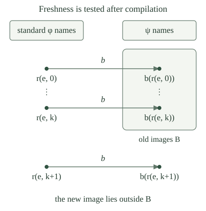

Let \(\psi\) be an acceptable numbering, with supplied total computable compilers \(c,b\) satisfying
Keep this numbering and these compiler directions fixed throughout the construction. Using the jointly injective padding map \(p\), put \(F(n)=p(c(n),n)\). Then \(F\) is a total computable injection from \(\psi\)-indices to standard indices, and \(\varphi_{F(n)}\simeq\psi_n\).
The map is a composition of total computable functions. Padding preserves the entire partial function of \(c(n)\), so \(\varphi_{F(n)}\simeq\varphi_{c(n)}\simeq\psi_n\), including divergence. If \(F(n)=F(m)\), joint injectivity of \(p\) recovers its second coordinate and gives \(n=m\). Thus this compiler is injective even if the supplied \(c\) was not.
Does the injectivity of \(t\mapsto p(e,t)\) force \(t\mapsto b(p(e,t))\) to be injective for every acceptable reverse compiler \(b\)? Give a counterexample.
Fix \(e\), and let \(a=p(e,0)\), \(d=p(e,1)\). These numbers are different but compute the same partial function. Take the alternative numbering to be the standard numbering itself, take \(c\) to be the identity, and define \(b(j)=a\) if \(j=d\), and \(b(j)=j\) otherwise. This finite conditional is total computable.
For \(j=d\), padding gives \(\varphi_{b(j)}\simeq\varphi_a\simeq\varphi_d\); for every other \(j\), the compiler preserves the index itself. Thus \(b\) is a valid reverse compiler. Nevertheless \(b(p(e,0))=a=b(p(e,1))\). Fresh standard names can collapse after translation, so the required freshness must be tested in the translated names.
For a finite list \(H\) of standard indices, let its translated forbidden list be \(B(H)=[b(i):i\text{ occurs in }H]\), with the same order and repetitions. Membership in this finite list is decidable by computing the finitely many values of \(b\).
The uniform partial-family theorem supplies one first-probe index \(n(e,H)\) and one rescue-probe index \(m(H)\) with the following partial-value identities, for every \(e,H,z\):
The numbers being tested are \(b(n(e,H))\) and \(b(m(H))\), both \(\psi\)-indices. The probes themselves are standard indices. They inspect their translated names, not an undecidable property of the functions those names compute.

For the fixed compiler \(b\), the probe indices can be selected primitive recursively in \(e\) and the code of \(H\). Their displayed behavior holds simultaneously for all parameters.
Given a proposed self-index \(j\), the parameter \((e,H)\), and runtime input \(z\), compute \(b(j)\) and the finite list \(B(H)\). In the first rule, run \(\varphi_e(z)\) if the membership test fails, and otherwise run a fixed nowhere-defined program. In the second rule, return one if the test succeeds and otherwise use that nowhere-defined program. Total computable tests and partial recursive branches make each rule jointly partial recursive.
Apply the uniform partial-family theorem once to each rule. It chooses fixed indices \(q_N,q_M\) before any \(e,H\) varies, and gives selectors of the form \(n(e,H)=s(q_N,\langle e,\operatorname{code}(H)\rangle)\), \(m(H)=s(q_M,\operatorname{code}(H))\). These numerical selectors are primitive recursive. Their index construction does not evaluate \(b\); the selected programs evaluate it when they run. Their behavior identities concern the programs' own selected indices and all runtime inputs, as required.
If \(b(n(e,H))\notin B(H)\), then \(\varphi_{n(e,H)}\simeq\varphi_e\), and its translated name avoids every entry of \(B(H)\).
The membership test selects the first branch of the first-probe identity for every runtime input \(z\). That branch is exactly \(\varphi_e(z)\). The freshness statement is the assumed failure of membership in the finite list.
Suppose \(H\) is nonempty and every \(i\) in \(H\) satisfies \(\varphi_i\simeq\varphi_e\). If \(b(n(e,H))\in B(H)\), then \(\varphi_e\) is nowhere defined, and \(\psi_j\) is nowhere defined for every \(j\) in \(B(H)\).
The collision selects the nowhere-defined branch, so \(\varphi_{n(e,H)}\) is nowhere defined. Some \(i\) in \(H\) has \(b(n(e,H))=b(i)\). For every runtime input \(z\), the compiler identities and the hypothesis on \(H\) give
Consequently \(\varphi_e\) is nowhere defined. Each \(j\) in \(B(H)\) equals \(b(i)\) for some \(i\) in \(H\), and then \(\psi_j\simeq\varphi_i\simeq\varphi_e\). This proves the second conclusion. The conclusion concerns functions represented by translated indices, not the standard functions with those same index numbers.
Under the hypotheses of , write \(m=m(H)\). Then \(b(m)\notin B(H)\) and \(\varphi_m\simeq\varphi_e\).
Suppose \(b(m)\in B(H)\). The rescue identity makes \(\varphi_m(0)\downarrow=1\). On the other hand, the compiler identity gives \(\varphi_m\simeq\psi_{b(m)}\), and the collision lemma says that this last function is nowhere defined. A partial function cannot both return one and be undefined at zero. Thus \(b(m)\notin B(H)\).
The other rescue branch now makes \(\varphi_m\) nowhere defined. The collision lemma also made \(\varphi_e\) nowhere defined, so the two partial functions agree on every input. The rescue index \(m\) is a standard index; it is its image \(b(m)\) that has been kept out of the forbidden list.
The next equivalent-index operator is
This is total computable jointly in \(e\) and the code of \(H\): compute the first index, evaluate the total compiler \(b\), compute the finitely many old translated names, and select a branch. If \(H\) is nonempty and all its entries compute \(\varphi_e\), the two preceding cases show
No test deciding whether \(\varphi_e\) is nowhere defined occurs in this algorithm. That fact was only a consequence used to justify the collision branch.
Define the equivalent-index histories and their translated padding family by
Here \(+\!+\) is list concatenation. The history has length \(k+1\), by induction, so its indicated entry exists. At each stage the finite forbidden list is \(B(H_e(k))\): it contains the translated images of earlier standard indices computing the same original function.
The family \(r\) is total computable jointly in \(e,k\), satisfies \(\varphi_{r(e,k)}\simeq\varphi_e\), and has
At stage zero, the sole history entry is \(e\). Suppose all old entries compute \(\varphi_e\) and their translated images are distinct. The history is nonempty, so appends an equivalent index whose translated image is absent from every old image. Both invariants are preserved. Induction proves equivalence of every history entry and distinctness of all its translated images. Each earlier history is a prefix of every later one, so the conclusions hold for any two stages \(k,l\).
The update \((e,H)\mapsto H\mathbin{+\!+}[u(e,H)]\) is total computable on coded lists, using finite-list operations and the total operator \(u\). The finite-chain criterion for recursion makes the prescribed number of these updates total computable jointly in \(e,k\). A final finite lookup computes \(r(e,k)\). This argument claims ordinary computability: selecting a branch actually runs the supplied compiler \(b\).
Let \(L\) be any finite list of \(\psi\)-indices, with length \(m\). Let \(a(e,L)\) be the least \(k\le m\) such that \(b(r(e,k))\notin L\), and put \(q(e,L)=r(e,a(e,L))\). Then these choices exist, are total computable jointly in their coded inputs, and satisfy
The first \(m+1\) translated values \(b(r(e,0)),\ldots,b(r(e,m))\) are distinct by . They cannot all occur in a list with only \(m\) positions. Each candidate can be computed and membership in \(L\) can be tested by a finite scan. Searching this fixed finite range therefore terminates with the first escape. Computing the selected family member gives \(q\), and its evaluation identity is the family identity.
Unlike the special list \(B(H_e(k))\), this list \(L\) may contain indices of unrelated functions. No semantic claim about those functions is required. The family was constructed first, and its distinct translated images now guarantee escape from every finite list.
Define a list of chosen translated names by
The list \(J(e)\) has length \(e\). The injective reverse compiler is \(G(e)=J(e+1)[e]=b(q(e,J(e)))\). These histories use all earlier chosen translated names, even when they represent different partial functions. Both the histories and \(G\) are computed by the displayed finite recurrence and finite lookups.
The specified \(G\) is total computable and injective, and \(\psi_{G(e)}(x)\simeq\varphi_e(x)\) for every \(e,x\).
The update for \(J\) is total computable by and the totality of \(b\). Finite recursion computes \(J(e)\), and hence its appended entry \(G(e)\). Each new entry avoids every entry already in the history. If \(i<e\), then \(G(i)\) occurs in \(J(e)\), so \(G(e)\ne G(i)\). This proves injectivity.
Finally, the compiler identity and the chosen equivalent index give \(\psi_{G(e)}\simeq\psi_{b(q(e,J(e)))}\simeq\varphi_{q(e,J(e))}\simeq\varphi_e\). Thus the entire partial function, including its divergence, is preserved.
For every acceptable numbering \(\psi\) with supplied compilers \(c,b\), there are total computable maps \(\pi,\kappa:\mathbb N\to\mathbb N\) such that
More precisely, take \(\pi=h_{G,F}\) and \(\kappa=k_{G,F}\), the specified finite-stage maps of the effective matching construction for the injections \(G,F\). In particular \(\pi\) is a computable permutation and \(\kappa\) is its computable inverse.
The two injections have directions \(G:\text{standard names}\to\psi\text{-names}\) and \(F:\psi\text{-names}\to\text{standard names}\). Use labels \(\ell_X(e)=\varphi_e\) and \(\ell_Y(n)=\psi_n\), which are entire partial functions. The forward compiler result and give exactly the two preservation hypotheses of the labelled matching theorem.
That theorem applies without deciding equality of partial functions or giving their label space a numerical coding. It makes these very maps \(\pi,\kappa\) total computable numerical inverses and preserves the labels. This proves Rogers’s isomorphism theorem with both the bijection and its inverse supplied by effective constructions.
Let \(\psi,\theta\) be acceptable numberings. Apply to obtain maps \(\pi_\psi,\kappa_\psi\) and \(\pi_\theta,\kappa_\theta\). Then the total computable maps
are numerical inverses and satisfy \(\theta_{T(n)}\simeq\psi_n\) for every \(n\).
Composition preserves total computability. The inverse identities for each pair reduce \(S(T(n))\) to \(n\) and \(T(S(n))\) to \(n\). At every runtime input \(x\),
The same argument gives the reverse behavioral translation. Thus the result concerns arbitrary acceptable numberings through ordinary computations on their indices.
A related question asks for a uniform listing of all c.e. sets with no repeated set. Its failure of a computable reverse translator concerns domain names; the objects being listed there are sets.
For \(\pi\) as in , compute the effect on zero-input halting. Then write the exact additional condition for this same \(\pi\) to carry the standard diagonal halting set onto the diagonal halting set for \(\psi\).
At the fixed runtime input zero, the identity says \(\psi_{\pi(e)}(0)\downarrow\Longleftrightarrow\varphi_e(0)\downarrow\). Thus this same permutation carries the standard zero-input halting set to the corresponding \(\psi\)-set.
For diagonal halting, substituting runtime input \(\pi(e)\) instead gives \(\psi_{\pi(e)}(\pi(e))\downarrow\Longleftrightarrow\varphi_e(\pi(e))\downarrow\). Consequently \(\pi\) carries the diagonal sets precisely when
The fixed-runtime compiler identity and this changed-runtime condition are different assertions. The existing frozen-run recodings keep a chosen old computation fixed before changing its program name; that behavioral identity licenses substituting the new index as runtime input. Mere equality of computed functions does not perform that additional freezing.